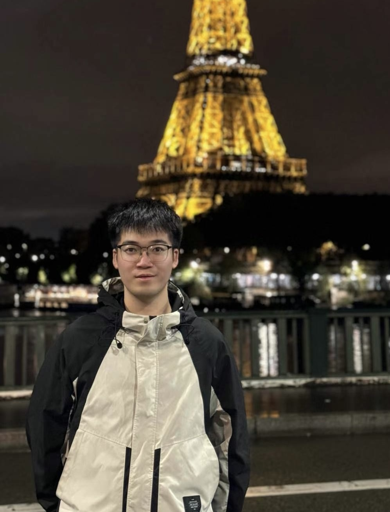
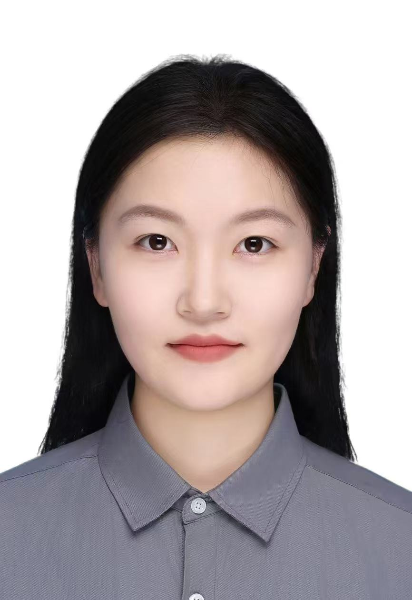
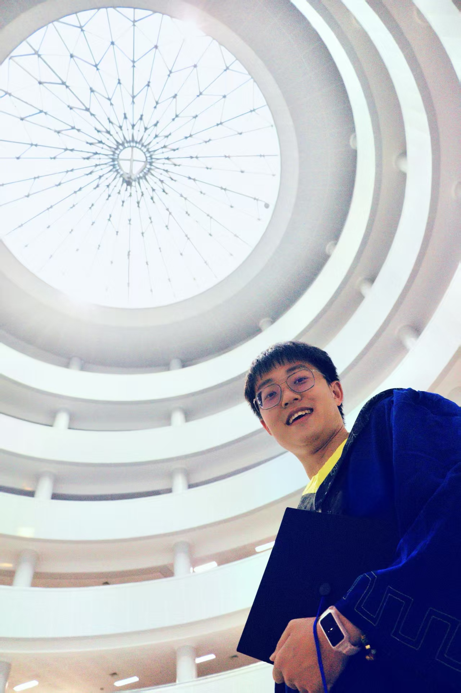
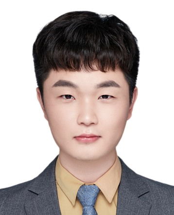
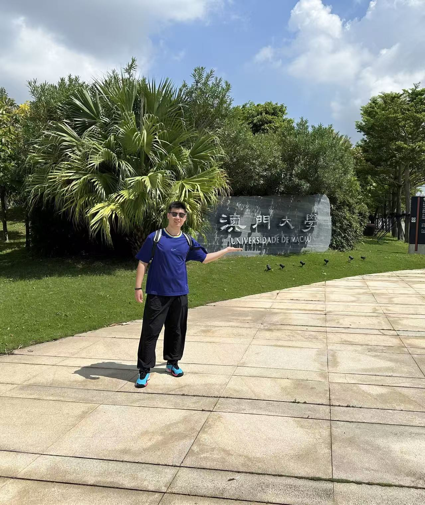
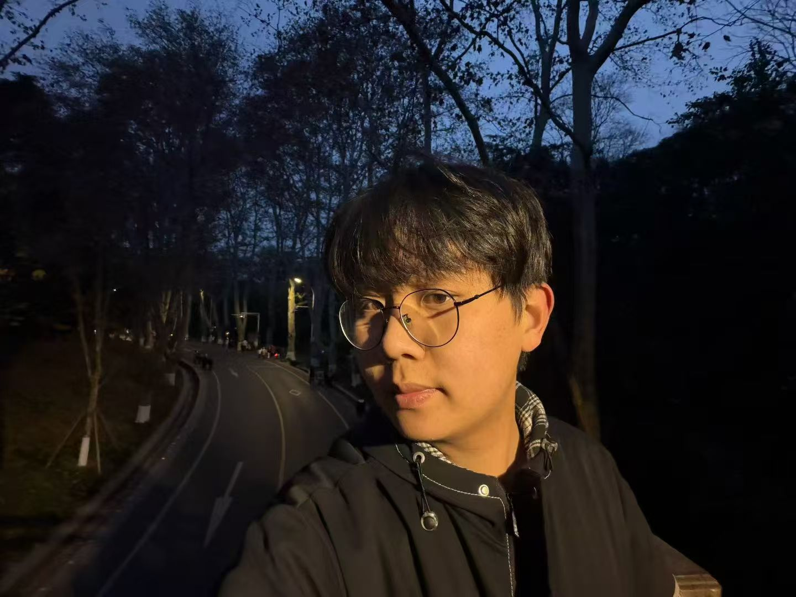

Our Team
Principal Investigator
Qing Li
Assistant Professor & PhD Supervisor
Institute of Applied Physics and Materials Engineering, University of Macau
Dr. Qing Li is an Assistant Professor and PhD Supervisor at the Institute of Applied Physics and Materials Engineering (IAPME), University of Macau. Her research focuses on advanced electrochemical energy storage, particularly aqueous zinc batteries, electrolyte engineering, interfacial chemistry, and battery materials.
She has over two years of industrial R&D experience in battery technologies, connecting fundamental research with practical applications. She has published over 80 peer-reviewed papers, including in Nature Communications, Science Advances, Joule, Angewandte Chemie International Edition, and Advanced Materials, with more than 10,000 citations and an h-index of 47.
Her projects have received support from the National Natural Science Foundation of China, the University of Macau, and industrial partners. She has been recognized as a Stanford World’s Top 2% Scientist.
Academic Qualifications
- Ph.D., Materials Science and Engineering, City University of Hong Kong, 2023 (HKPFS recipient)
- M.Phil., Chemical and Biomolecular Engineering, The Hong Kong University of Science and Technology, 2017
- M.S., Materials Science and Engineering, Tsinghua University, 2017
- B.S., Materials Chemistry, Central South University, 2014
Academic & Professional Experience
- Aug 2024–present: Assistant Professor, Institute of Applied Physics and Materials Engineering, University of Macau
- 2023–2024: Postdoctoral Fellow, Department of Materials and Engineering, City University of Hong Kong (PDFS recipient)
- 2018–2019: Product Design Engineer, Sunwoda Electronics Co., Ltd.
- 2017–2018: Engineer, Shenzhen Qingxin Power Research Institute
Honors & Awards
- 2025 Stanford/Elsevier World’s Top 2% Scientist
- 2023 Hong Kong RGC Postdoctoral Fellowship, University Grants Committee (Hong Kong)
- 2022 Chow Yei Ching School of Graduate Studies Scholarship, City University of Hong Kong
- 2019 Hong Kong PhD Fellowship, University Grants Committee (Hong Kong)
- 2014 International Exchange Program Scholarship, China Scholarship Council
- 2012 National Scholarship, Ministry of Education of China
Postdoctoral Researchers
Jinhua Guo
Postdoctoral Researcher
Postdoctoral Researcher, Institute of Applied Physics and Materials Engineering, University of Macau; Ph.D., Wuhan University.
Research: redox flow batteries. Published 8 first-author papers in related fields and applied for 8 invention patents.

Zhenjing Jiang
Postdoctoral Researcher
Postdoctoral Researcher, Institute of Applied Physics and Materials Engineering, University of Macau; Ph.D., Southeast University.
Research: MOF structural design for aqueous zinc-ion batteries. Published 10 papers as first or co-first author, including papers in Advanced Materials and Energy & Environmental Science (2 papers), and applied for 2 invention patents.
Ph.D. Students
Zhaoxin Li
Ph.D. Student
Ph.D. Student, Institute of Applied Physics and Materials Engineering, University of Macau; M.S., Institute of Process Engineering, Chinese Academy of Sciences.
Research: zinc-halogen flow batteries, aqueous zinc-ion batteries, and metal-chelate flow batteries. First author of 4 papers in Angewandte Chemie International Edition, Advanced Energy Materials, Chemical Engineering Journal, and ACS Applied Energy Materials; co-author of 6 papers, with 40 citations and 1 patent application. Amateur astrophotographer and intermediate judge at Xunjixingke.

Zhenyu Jiang
Ph.D. Student
Ph.D. Student, Institute of Applied Physics and Materials Engineering, University of Macau.
Research: design of lithium-compensation materials, interfacial regulation, and mechanisms for long-life, high-energy-density lithium iron phosphate batteries. Published 2 papers in related fields and applied for 4 invention patents.

Shuchang Liu
Ph.D. Student
Ph.D. Student, Institute of Applied Physics and Materials Engineering, University of Macau; M.S., Xiamen University.
Research: battery interfacial evolution and the development of high-performance alkali-metal batteries. Published one first-author paper in Advanced Energy Materials and applied for 2 invention patents.
Zhiyuan Xia
Ph.D. Student
Ph.D. Student, University of Macau.
Research: materials computation and AI4S. Personality type: ENTJ. Outside research, he enjoys fitness, badminton, outdoor activities, and fishing and hunting.

Longjun Chang
Ph.D. Student
Ph.D. Student, Institute of Applied Physics and Materials Engineering, University of Macau.
Research: renewable biomass resources for energy storage, with a focus on high-value biomass utilization, cellulose-based biomass separator fabrication, and applications in aqueous zinc-based batteries. First-author papers have appeared in Cellulose, Energy Materials and Devices, and Microporous and Mesoporous Materials.
Zhaoyang Zhang
Ph.D. Student
Ph.D. Student, Institute of Applied Physics and Materials Engineering, University of Macau; M.S., Southwest University.
Research: advanced functional materials and technologies for sustainable water resources. First-author papers have appeared in Cellulose and Environmental Research; applied for 2 invention patents.
Master's Students
Yuhua Fu
Master's Student
Master's Student, Institute of Applied Physics and Materials Engineering, University of Macau; B.S., Harbin Institute of Technology.
Research: energy-storage materials for zinc battery systems, currently focusing on the investigation and performance optimization of low-temperature-adapted electrolytes.
Junqiang Wang
Master's Student
Joined Li's Lab in September 2025. B.S. in Chemical Engineering and Technology, Faculty of Chemical and Materials, Huaibei Normal University (September 2020 – June 2024).
Recipient of the Excellent Graduation Scholarship in 2024.

Bo Zhu
Master's Student
Joined the lab in September 2025. B.S., Beijing Institute of Petrochemical Technology (2023).
Wenbo Liang
Master's Student
Master's Student, Institute of Applied Physics and Materials Engineering, University of Macau.
Research: aqueous zinc-bromine energy-storage batteries, focusing on electrolyte regulation, bromine valence-state conversion mechanisms, bromine-shuttle suppression strategies, and electrochemical performance optimization.
Research Assistants

Biao Hu
Research Assistant
Joined the lab in July 2026. B.S., Ningbo University.
Research: surface engineering, solid-state electrolytes, and materials computation. Published 4 first- or second-author papers in journals including Surface & Coatings Technology and Carbon; applied for 1 invention patent.